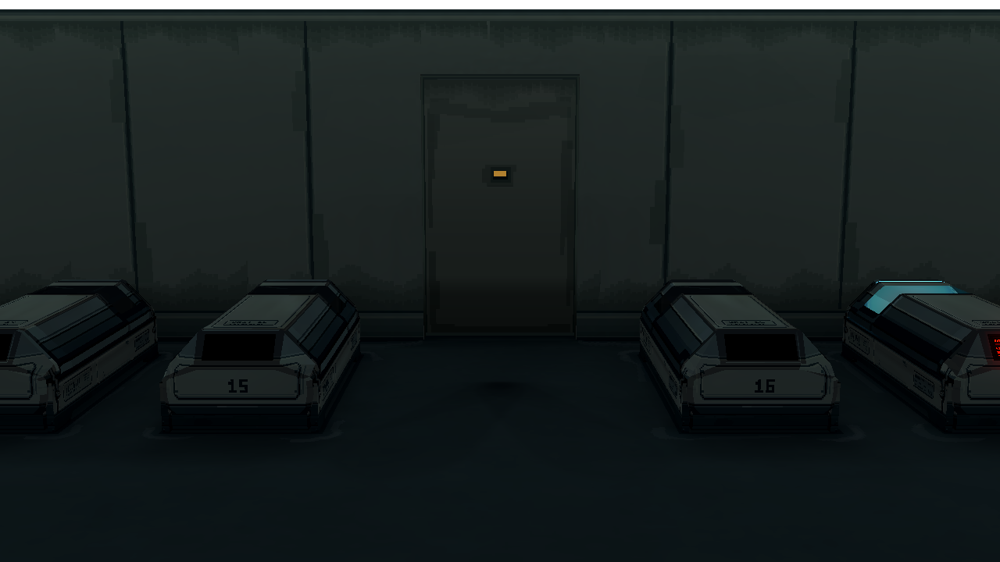
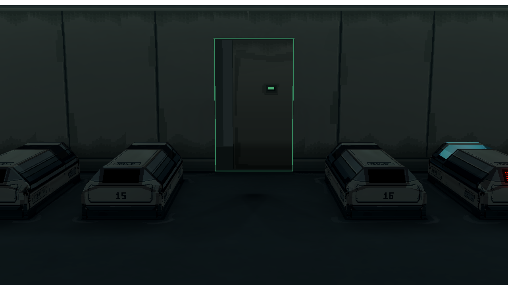
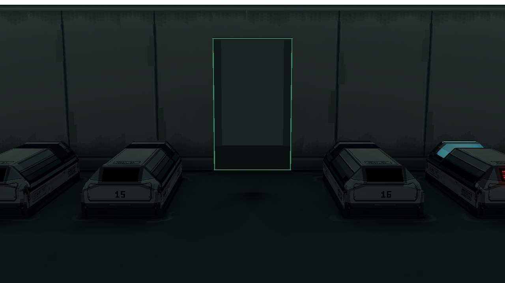

Room 1 主门：门框收敛与旧化贴图 v6
同一 Godot 镜头、1280 × 720。v3 是结构及灯语基准，v5 是上一版做旧候选，v6 只调整待机收边、门叶侧面与像素旧化；门尺寸、滑动、碰撞、房间布局和照明保持 v3。
关闭状态对比
 v3 基准：门框侧面过黑，门叶做旧主要集中在底部
v3 基准：门框侧面过黑，门叶做旧主要集中在底部
 v5：去掉底部大块痕迹后，整体过于平净
v5：去掉底部大块痕迹后，整体过于平净
 v6：弱化待机框；沉积与磨耗回到上密封条、滑动侧边和小窗凹口
v6：弱化待机框；沉积与磨耗回到上密封条、滑动侧边和小窗凹口
通行与反馈

认证中：仅小窗黄色

通行中：四边绿灯保持，门叶侧面与贴图同色系

门开启：通道有效期间绿灯仍亮
拒绝：只有小窗红色，不出现红色门框
贴图近看
本页是审图候选，暂未替换正式 Room 1。上沿沉积沿用现行 r6 墙面像素语言；门面不使用随机斑点，门底也不再画固定墙体那样的大面积地面污积。